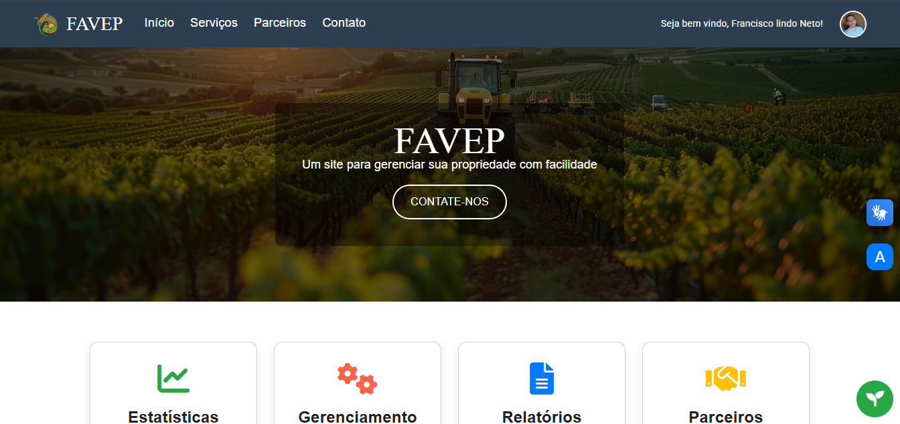
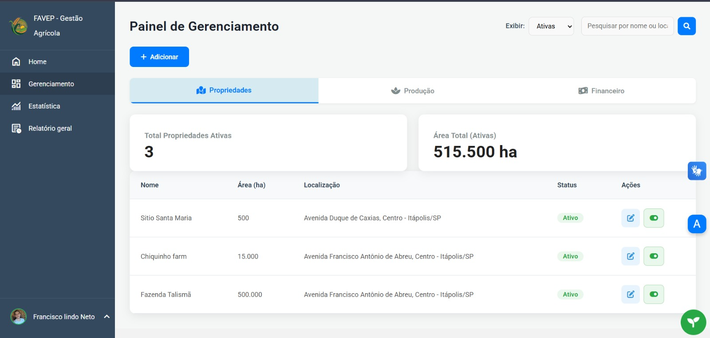
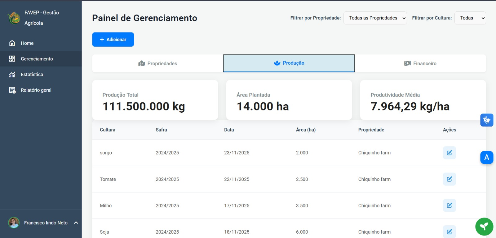
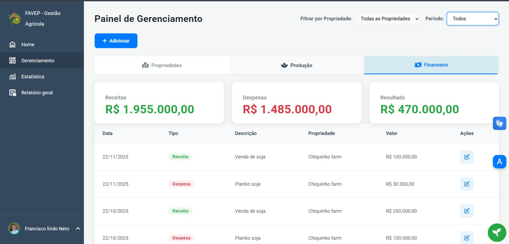
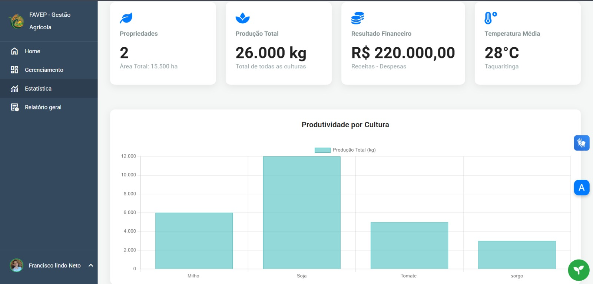
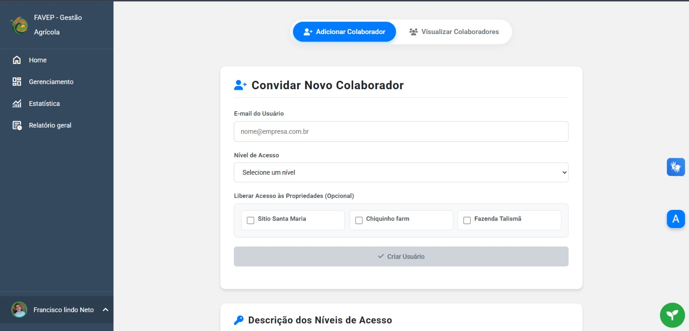
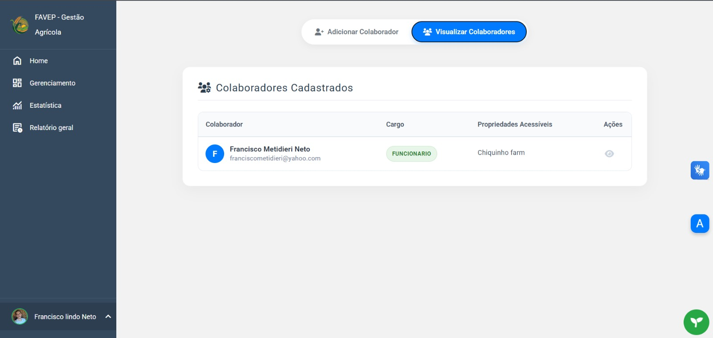
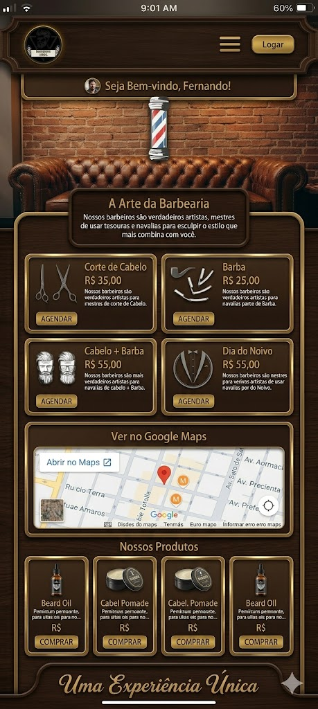

Soluções Digitais & Projetos de Alto Impacto
Transformo conceitos complexos em sistemas funcionais e intuitivos, utilizando as tecnologias mais modernas do mercado para entregar valor real ao usuário final.
Desenvolvimento Web
Criação de Ecossistemas Responsivos
Meus projetos são desenvolvidos com focus total em performance, SEO e adaptabilidade. Utilizo HTML5 semântico e CSS3 avançado (Flexbox e Grid) para garantir que a interface seja impecável em qualquer dispositivo, do desktop ao smartphone.
Como foi desenvolvido: A arquitetura foi pensada para ser escalável, priorizando o carregamento rápido e uma estrutura de código limpa que facilita manutenções futuras e integrações complexas.







FAVEP - Gestão Agrícola
Uma plataforma Full-Stack robusta desenvolvida para otimizar a administração rural. O sistema foca no controle preciso de produção, gestão financeira detalhada e dashboards para tomada de decisão estratégica em tempo real.
UI/UX Design
Interfaces Centradas no Usuário
Aplico metodologias de Design Thinking e pesquisa de usuário para criar fluxos lógicos e intuitivos. Meu objetivo principal é alinhar as necessidades do negócio com a melhor experiência de usabilidade para o usuário final.
Diferencial: Utilizo prototipagem de alta fidelidade para validar hipóteses e garantir que o produto final seja visualmente atraente e funcionalmente impecável, seguindo padrões modernos de acessibilidade.

Design & Prototipagem
Foco na criação de sistemas visuais modernos e coerentes. Desenvolvo interfaces que equilibram estética e performance, garantindo que cada interação do usuário seja fluida e eficiente.